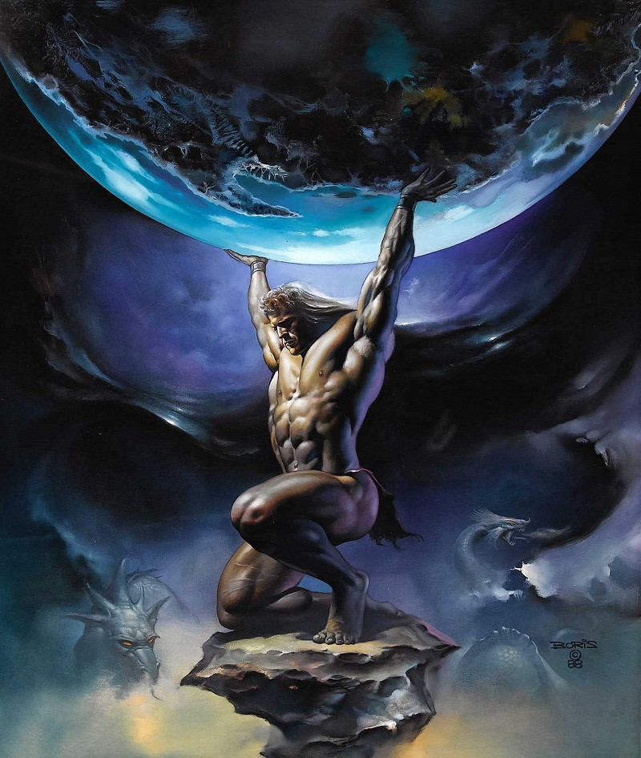

ดาวยูเรนัส
ดาวเสาร์ (Saturn) ยูเรนัส (Uranus) ถูกค้นพบครั้งแรกโดย วิลเลี่ยม เฮอส์เชล ในปี พ.ศ.2534 สองร้อยปีต่อมา ยานวอยเอเจอร์ 2 ทำการสำรวจดาวยูเรนัสในปี พ.ศ. 2529 พบว่า บรรยากาศของดาวยูเรนัสประกอบด้วยไฮโดรเจน 83%, ฮีเลียม 15% และมีเทน 2% ดาวยูเรนัสมีสีฟ้าเนื่องจากแก๊สมีเทนดูดกลืนสีแดงและสะท้อนสีน้ำเงิน บรรยากาศมีลมพัดแรงมาก ลึกลงไปที่แก่นของดาวห่อหุ้มด้วยโลหะไฮโดรเจนเหลว ขณะที่ดาวเคราะห์ส่วนใหญ่มีแกนหมุนรอบตัวเองเกือบตั้งฉากกับระนาบสุริยวิถี แต่แกนของดาวยูเรนัสวางตัวเกือบขนานกับสุริยวิถี ดังนั้นอุณหภูมิบริเวณขั้วดาวจึงสูงกว่าบริเวณเส้นศูนย์สูตร ดาวยูเรนัสมีวงแหวนเช่นเดียวกับดาวเคราะห์ชั้นนอกดวงอื่นๆ วงแหวนของดาวยูเรนัสมีความสว่างไม่มาก เนื่องจากประกอบด้วยอนุภาคขนาดเล็ก มีขนาดตั้งแต่ฝุ่นผงจนถึง 10 เมตร ดาวยูเรนัสมีดวงจันทร์บริวารอย่างน้อย 27 ดวง ดวงจันทร์ขนาดใหญ่ที่มีรูปร่างเป็นทรงกลม ได้แก่ มิรันดา แอเรียล อัมเบรียล ไททาเนีย และ โอเบรอน
ที่มา :
http://www.lesa.biz/astronomy/solar-system/planets/uranus
คำอธิบาย
1. ภาพถ่ายจากกล้องโทรทรรศน์อวกาศฮับเบิล แสดงให้เห็นจุดมืดซึ่งเกิดขึ้นใหม่
2. แสงอาทิตย์สะท้อนจากตัวดาวกลับมายังวงแหวน ทำให้สามารถมองเห็นวงแหวนได้จากโลก
3. ดวงจันทร์เอเรียล (จุดสีขาว) และเงา (จุดสีดำ) เบื้องหน้าของดาวยูเรนัส
4. ดวงจันทร์มิรันดา
5. วงแหวนบาง 2 วงอยู่รอบนอก โดยมีดวงจันทร์ปรากฏเป็นเส้นอาร์คสว่างอยู่ด้านในเนื่องจากเปิดหน้ากล้องนาน
6. มุมมองจากโลกเปลี่ยนแปลงเนื่องจากวงโคจรของยูเรนัสและโลกอยู่ต่างระนาบกัน
ยูเรนัสผู้มาก่อน
ชื่อกรีก : เทพยูเรนัส Uranus หรือ อูรานอส Ouranos
ชื่อโรมัน : เทพแคลุส Caelus
ล่ากันว่าระยะแรกๆนั้นทุกอย่างในจักรวาลนั้นสับสนอลหม่านไปหมดในความมืดมิดของจักรวาลอันกว้างใหญ่สรรพสิ่งต่างๆรวมตัวเป็นอันเดียวกันเราเรียกสิ่งนี้ว่า เคออส (Chaos)และหลังจากนั้นอีกนานเรียกได้ว่าและอีกนานนับกัปกัลป์โลกหรือแผ่นดินก็ได้อุบัติขึ้นเพื่อเป็นมารดาของทุกสรรพสิ่ง เรียกว่า จีอาหรือกีอา(Gaea) ในภาษาโรมันคือ เทลัส(Tellus)และในครั้งนั้นสวรรค์ก็ได้อุบัติขึ้นซึ่งก็คือ อุรานอส(Ouranos)หรือในภาษาโรมันคือยูเรนัสและบัดนี้

เทพยูเรนัส
ที่มา :
https://www.facebook.com/616823348449671/photos/%E0%B8%95%E0%B8%B2%E0%B8%A1%E0%B8%95%E0%B8%B3%E0%B8%A3%E0%B8%B2-hesiod-%E0%B9%80%E0%B8%A3%E0%B8%B7%E0%B9%88%E0%B8%AD%E0%B8%87%E0%B8%A1%E0%B8%B1%E0%B8%99%E0%B9%80%E0%B8%A3%E0%B8%B4%E0%B9%88%E0%B8%A1%E0%B8%95%E0%B8%A3%E0%B8%87%E0%B8%97%E0%B8%B5%E0%B9%88%E0%B9%80%E0%B8%97%E0%B8%9E%E0%B9%80%E0%B8%88%E0%B9%89%E0%B8%B2%E0%B8%97%E0%B8%B5%E0%B9%88%E0%B8%8A%E0%B8%B7%E0%B9%88%E0%B8%AD-chaos-%E0%B9%80%E0%B8%84%E0%B8%AD%E0%B8%AD%E0%B8%AA-%E0%B9%81%E0%B8%9B%E0%B8%A5%E0%B8%A7%E0%B9%88%E0%B8%B2%E0%B8%84%E0%B8%A7%E0%B8%B2%E0%B8%A1%E0%B8%A7%E0%B9%88%E0%B8%B2%E0%B8%87%E0%B9%80%E0%B8%9B%E0%B8%A5%E0%B9%88/620587591406580/
เทพบิดรยูเรนัสกับเทพมารดากีอา ทั้งสองก็ได้มีจิตปฏิพัทธ์ต่อกันได้ให้กำเนิดโอรสและธิดา แบ่งเป็น3กลุ่มดังนี้ค่ะ
ชุดที่1.กลุ่มเทพไททัน(Titan)มี12องค์
ชุดที่2.กลุ่มเทพไซคลอปส์(Cyclops)มี3องค์
ชุดที่3. กลุ่มเทพอสูร มี3องค์
กลุ่มเทพไททัน(Titan)ทั้ง12องค์มีรายชื่อดังนี้
1.เทพบุตรโอเชียนัส(Oceanus)เจ้าสมุทร
2.เทพบุตรซีอัส(Coeus)
3.เทพบุตรครีอัส(Creus)
4.เทพบุตรไฮเพอร์เรียน(Hyperion)เทพแห่งวิถีโคจรของดวงอาทิตย์
5.เทพบุตรไอแอพิทัส(Lapetus)
6.เทพบุตรโครนัส(Cronus)
7.เทพธิดาอิเลีย(Llia)
8.เทพธิดารีอา(Rhea)พระมเหสีของโครนัส
9.เทพธิดาทีมิส(Themis)เทพแห่งความยุติธรรม
10.เทพธิดาทีทิส(Thetis)ชายาเอกของเทพโอเชียนัส
11.เทพธิดานีโมซินี(Mnemosyne)เทพแห่งความจำ
12.เทพธิดาฟีบี(Phoebe)เทพแห่งวิถีโคจรของดวงจันทร์
เทพบุตรและธิดากลุ่มไททันทั้ง12พระองค์มีร่างกายใหญ่โต คำว่าไททันเป็นที่มาของศัพท์ ไททันนิค(Titanic)ในภาษาอังกฤษ ที่แปลว่าใหญ่โต รูปร่างของพวกไททันไม่เหมือนเทพบุตรและธิดาที่สวยงาม อย่างที่เราคิดนะคะ เราเรียกว่ายักษ์ได้เลยค่ะ และด้วยความที่ร่างกายใหญ่โตนี้เอง เลยทำให้พระบิดายูเรนัสบังเกิดความเกรงกลัวจึงได้นำไปขังไว้ที่เหวลึกใต้บาดาลทาร์ทะรัส(Tartarus) เพื่อป้องกันโอรสธิดาคิดปฎิวัติยึดอำนาจไปจากตน
กลุ่มเทพไซคลอปส์
1.บรอนทีส(Brontes)เทพฟ้าร้อง
2.สเทอโรฟิส(Steropes)เทพฟ้าแลบ
3.อาร์จี (Arges) เทพสายฟ้า
เทพชุดนี้มีร่างกายใหญ่โต มีดวงตาดวงเดียวอยู่กลางหน้าผาก ทั้งสามเป็นผู้ช่างตีเหล็ก ที่มีพละกำลังมากมายมหาศาล เวลาที่ทั้งสามตีเหล็กก็จะเกิดประกายไฟจากค้อนแลบข้ามท้องฟ้าสว่างไสว
พระบิดาเทพยูเรนัสได้นำอสูรทั้งสามลงไปขังไว้ที่ทาร์ทะรัส อีกเช่นกันค่ะ เดิมทีทาร์ทะรัสนั้นมืดมิด แต่ครั้นเทพทั้งสามลงไปในอยู่ก็ทำให้ทาร์ทะรัสสว่างไสวไปทั่ว จึงทำให้กลุ่มเทพอสูรไททันเกิดความกล้าและเริ่มคิดหาหนทางปลดแอกตนเอง
กลุ่มเทพอสูร
1.เทพอสูรคอตทัส(Cottus)
2.เทพอสูรเบรียรูส(Briareus)
3.เทพอสูรไกจีส (Gyges)
พระแม่กีอา ได้ให้กำเนิดเทพอสูรอีกสามองค์ซึ่งก็ออกมาอีหรอบเดิมล่ะค่ะพระบิดายูเรนัสไม่พอใจอีกเช่นเดิมเพราะโอรสชุดนี้แต่ละองค์มีถึงห้าสิบเศียรและร้อยกร ก็เลยนำไปขังไว้ที่ทาร์ทะรัสเช่นเดียวกับพวกพี่ๆ
การที่เทพยูเรนัสได้นำลูกๆไปขังไว้ที่เหวลึกใต้บาดาลทาร์ทะรัสนั้นสร้างความไม่พอใจให้กับพระแม่กีอาอย่างมาก ไม่ว่านางจะห้ามปรามหรือตักเตือนอย่างไรก็ตาม ก็อย่างว่าล่ะนะคะ แม่คนไหนๆก็รักลูกทั้งนั้น....ในที่สุดนางก็ทนไม่ได้แล้ว จึงได้ลงไปที่ใต้บาดาลและยุยงลูกๆให้ทำการปฏิวัติ รัฐประหาร ยึดอำนาจจากพระบิดาซะ ผลจากการยุยงนั้นมีเพียงโครนัสเพียงองค์เดียวที่ยุขึ้นค่ะ นอกนั้นไม่เอาเลยเลยค่ะ
พระแม่กีอาจึงได้ปลดปล่อยโครนัสขึ้นมาและมอบเคียวให้เป็นอาวุธ โครนัสก็ได้ไปซุ่มจับผู้เป็นบิดาและก็ทำการยึดอำนาจ และยึดบัลลังก์มาครองได้เป็นอันสำเร็จ
เทพยูนัสนั้นโกรธแค้นมากค่ะจึงได้สาปแช่งขอให้โครนัสโดนลูกๆของเค้านั้นแย่งบัลลังก์เช่นเดียวกับที่โครนัสทำกับตน ก่อนที่จะหนีไป